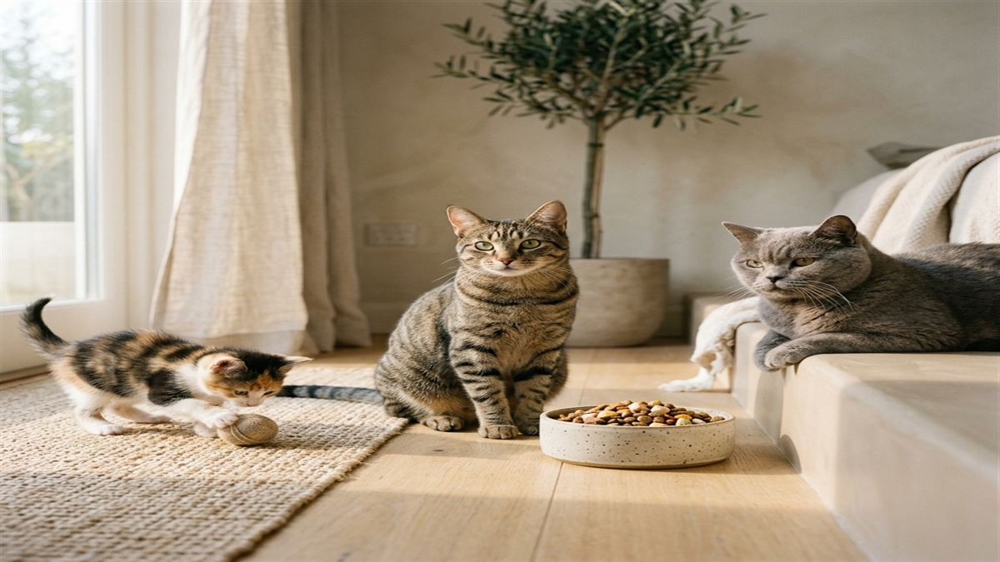
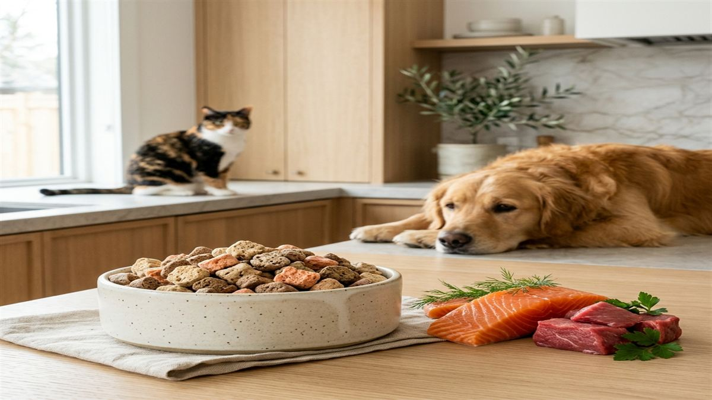
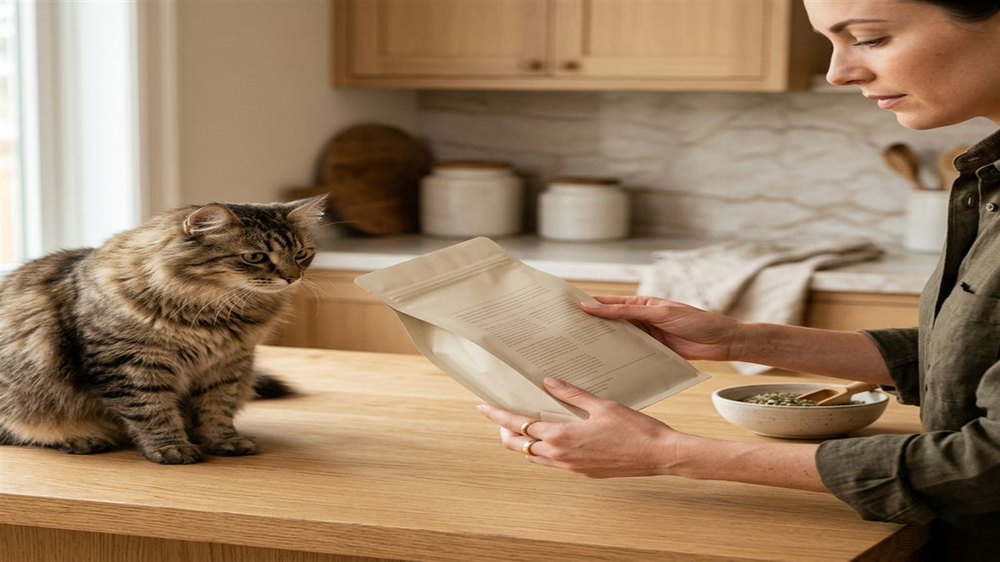
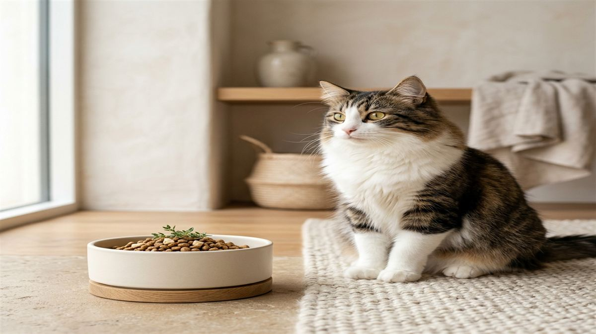
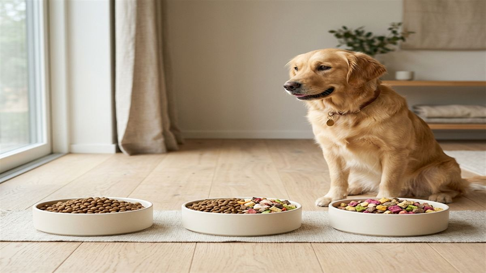
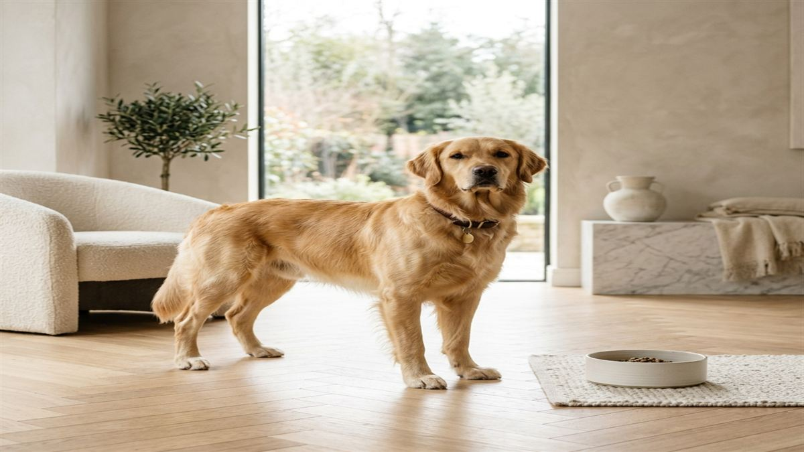

Kedi Sağlığı
Kedinizin Beslenme İhtiyaçları: Yaşa Göre Rehber
Yavru, yetişkin ve yaşlı kediler için doğru beslenme programı nasıl oluşturulur?
Evcil dostlarınız için uzman tavsiyeleri, beslenme rehberleri ve sağlık bilgileri.

Freeze dry teknolojisinin evcil hayvan beslenmesinde devrim yaratan avantajlarını, geleneksel kuru ve yaş mamalarla karşılaştırmalı olarak keşfedin.

Yavru, yetişkin ve yaşlı kediler için doğru beslenme programı nasıl oluşturulur?

Doğal ve katkısız beslenmenin köpeğinizin sağlığına olan olumlu etkilerini keşfedin.

Mama etiketindeki içerik listesini anlamak ve sağlıklı seçim yapmak için bilmeniz gerekenler.

Taurin kediler için neden hayati önemde? Eksikliği nasıl anlaşılır ve nasıl önlenir?

Evcil dostunuzun mamasını değiştirirken sindirim sorunlarını önlemek için izlenecek adımlar.

Köpeğinizin kilosunu değerlendirmek ve ideal kilosuna ulaşmasını sağlamak için pratik ipuçları.